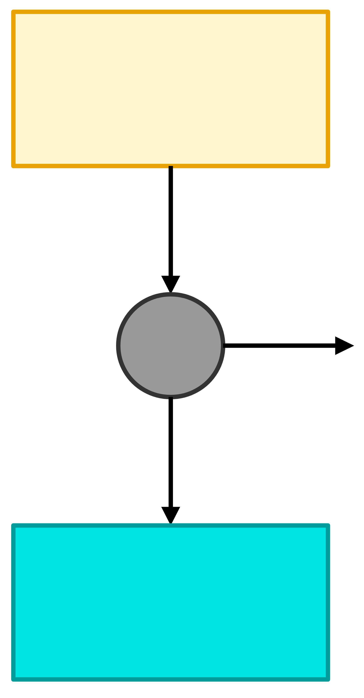
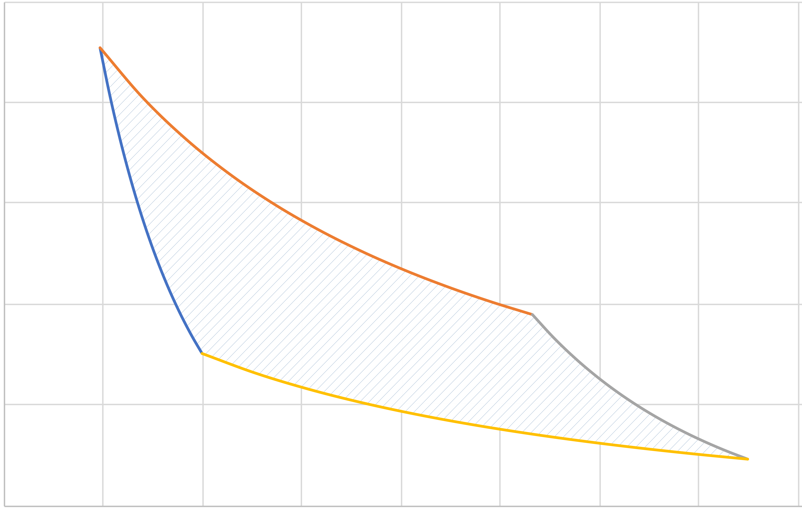
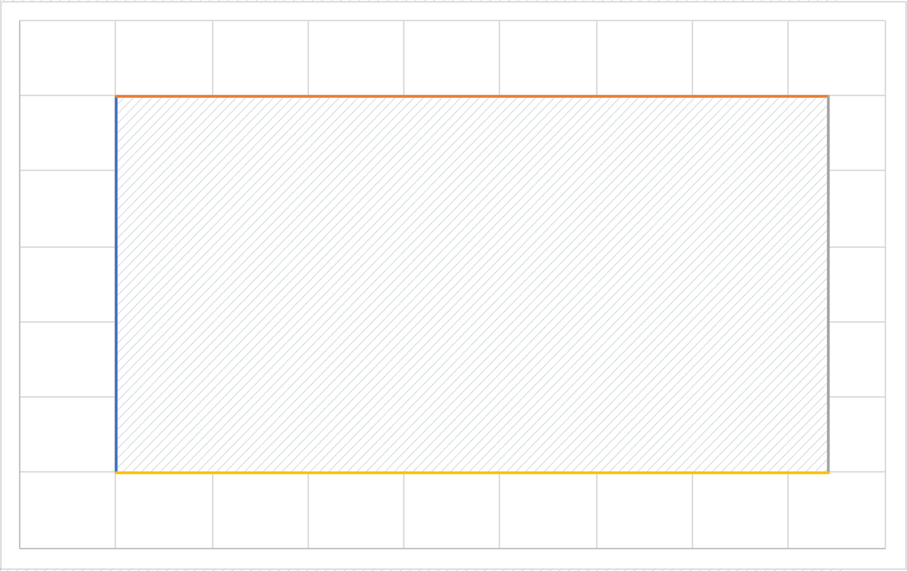

Sadi Carnot and the Power of Fire, the 1824 Edition Part 1
DOFPro Team

Introduction
These two videos present two examples of how you might actually implement a Carnot cycle in the physical world.
- Part 1 presents the air-standard Carnot cycle.
- Part 2 presents the steam Carnot cycle.
We will use these two examples as the basis for all of the power and refrigeration cycles we will study.
Mathematical Statement of the Second Law
or
Remember:
can be less than zero. But
The Carnot engine converts heat into work as well as it can be done.
It makes the greater than or equals sign in the Second Law into an equals sign.

\(T_\mathrm{hot}\)
\(T_\mathrm{cold}\)
\(|Q_\mathrm{hot}|\)
\(|Q_\mathrm{cold}|\)
\(|W|\)
A Carnot engine operates between two isothermal heat reservoirs and produces the greatest possible work while rejecting the minimum amount of heat. The efficiency of a Carnot engine is:
\[\eta \equiv \frac{|W|}{|Q_\mathrm{hot}|} = 1 - \frac{T_\mathrm{cold}}{T_\mathrm{hot}}\]
The four steps of any Carnot engine are:
- Adiabatic temperature change from \(T_\mathrm{cold}\) to \(T_\mathrm{hot}\)
- Isothermal heat addition of \(Q_\mathrm{hot}\) at \(T_\mathrm{hot}\)
- Adiabatic temperature change from \(T_\mathrm{hot}\) to \(T_\mathrm{cold}\)
- Isothermal heat removal of \(Q_\mathrm{cold}\) at \(T_\mathrm{cold}\)
Air-standard Carnot cycle
The steps of the Carnot cycle
- Adiabatic compression from \(T_\mathrm{cold}\) to \(T_\mathrm{hot}\) (State \(a\) to State \(b\)).
- Isothermal heat addition (State \(b\) to State \(c\)).
- Adiabatic expansion from \(T_\mathrm{hot}\) to \(T_\mathrm{cold}\) (State \(c\) to State \(d\)).
- Isothermal heat removal (State \(d\) to State \(a\)).
For air-standard assume:
A. Ideal Gas
B. \(C_v = \dfrac{5}{2}R \implies C_p = \dfrac{7}{2}R\)
For step 1 (Review from The Isochronicles: This First Law Saga Is a Gas)
Closed system adiabatic reversible.
1st Law
\(\Delta U = W\)
\(nC_v \Delta T = W\)
\(W = nC_v (T_\mathrm{hot} - T_\mathrm{cold})\)
How about \(P\) and \(\hat{V}\)?
If \(\Delta S = 0\) (why?)
\(\left(\dfrac{P_b}{P_a}\right)^{\frac{R}{C_p}} = \dfrac{T_\mathrm{hot}}{T_\mathrm{cold}}\)
\(P\hat{V}=RT\)
So
\[\frac{\hat{V}_a}{\hat{V}_b} = \left(\frac{P_b}{P_a}\right)^{\frac{C_p - R}{C_p}}\]
or
\[P_a\hat{V}_a^\gamma = P_b\hat{V}_b^\gamma = \mathrm{constant}\]
where
\[\gamma \equiv \frac{C_p}{C_v} = \frac{C_p}{C_p - R}\]
For Step 2
1st Law – closed system isothermal
\(\Delta U = Q + W\)
\(\Delta U = 0\) (Why?)
\(Q = -W\)
\(W = -n\int\limits_{P_i}^{P_f}Pd\hat{V}\)
Since
\(P=\dfrac{RT}{\hat{V}}\)
\(W = -nRT\int\limits_{\hat{V}_i}^{\hat{V}_f} \dfrac{d\hat{V}}{\hat{V}} = nRT \ln \dfrac{\hat{V}_i}{\hat{V}_f} = nRT \ln \dfrac{P_f}{P_i} = -Q\)
For Step 3
Adiabatic expansion
\(W = nC_v (T_\mathrm{cold} - T_\mathrm{hot})\)
For Step 4
Isothermal cooling
\(W = nRT \ln \dfrac{\hat{V}_i}{\hat{V}_f} = nRT \ln \dfrac{P_f}{P_i} = -Q\)
The Complete Cycle

\(a\)
\(b\)
\(c\)
\(d\)
Pressure
Volume
\(PV^\gamma = C_1\)
\(PV = C_2\)
\(PV^\gamma = C_3\)
\(PV = C_4\)
Note that
\(\dfrac{P_b}{P_a} = \left(\dfrac{T_\mathrm{hot}}{T_\mathrm{cold}}\right)^{\frac{C_p}{R}}\)
and
\(\dfrac{P_c}{P_d} = \left(\dfrac{T_\mathrm{hot}}{T_\mathrm{cold}}\right)^{\frac{C_p}{R}}\)
so
\(\dfrac{P_b}{P_a} = \dfrac{P_c}{P_d}\)
or rearranged
\(\dfrac{P_d}{P_a} = \dfrac{P_c}{P_b}\)
\(-\dfrac{W_\mathrm{net}}{n} = C_v(T_\mathrm{cold} - T_\mathrm{hot}) + R T_\mathrm{hot} \ln \dfrac{P_b}{P_c}\)
\(+\ C_v(T_\mathrm{hot} - T_\mathrm{cold}) + R T_\mathrm{cold} \ln \dfrac{P_d}{P_a}\)
\(-\dfrac{W_\mathrm{net}}{n} = R(T_\mathrm{hot} - T_\mathrm{cold}) \ln \dfrac{P_b}{P_c}\)
\(\dfrac{Q_\mathrm{hot}}{n} = R T_\mathrm{hot} \ln \dfrac{P_b}{P_c}\)
\[\eta = \frac{-W_\mathrm{net}}{Q_\mathrm{hot}} = \frac{R(T_\mathrm{hot} -T_\mathrm{cold}) \ln \dfrac{P_b}{P_c}}{R T_\mathrm{hot} \ln \dfrac{P_b}{P_c}} = \frac{T_\mathrm{hot} - T_\mathrm{cold}}{T_\mathrm{hot}} = 1 - \frac{T_\mathrm{cold}}{T_\mathrm{hot}}\]
Note area enclosed on \(P\hat{V}\) diagram is \(-W_\mathrm{net}\).

\(a\)
\(b\)
\(c\)
\(d\)
Pressure
Volume
\(PV^\gamma = C_1\)
\(PV = C_2\)
\(PV^\gamma = C_3\)
\(PV = C_4\)
What does a Carnot cycle look like on a \(TS\) diagram?

\(\hat{S} = \mathrm{constant}\)
\(T = T_\mathrm{hot}\)
\(\hat{S} = \mathrm{constant}\)
\(T = T_\mathrm{cold}\)
Temperature
Entropy
\(a\)
\(b\)
\(c\)
\(d\)
For cycle
\[-W_\mathrm{net} = Q_\mathrm{net}\]
The Carnot efficiency does not depend on the working fluid.
The videos, Cycle Wars: The Power Awakens and Cycle Wars: The Rise of Otto Cycles explain air-standard cycles based on the air-standard Carnot cycle.
Sadi Carnot and the Power of Fire, the 1824 Edition Part 2 presents the steam Carnot cycle.
The Takeaways
- The Carnot cycle consists of an isentropic temperature rise, an isothermal heat addition, an isothermal temperature drop, and an isothermal heat removal.
- The air-standard Carnot cycle implements the four steps as an isentropic compression, an isothermal expansion, an isentropic expansion, and an isothermal compression.
- The air-standard Carnot cycle efficiency can also be calculated in terms of the compression ratio and the pressure ratio.
Thanks for watching!
The previous video in the series is in the link in the upper left. The next video in the series is in the upper right. To learn more about Chemical and Thermal Processes, visit the website linked in the description.
The DOFPro Team